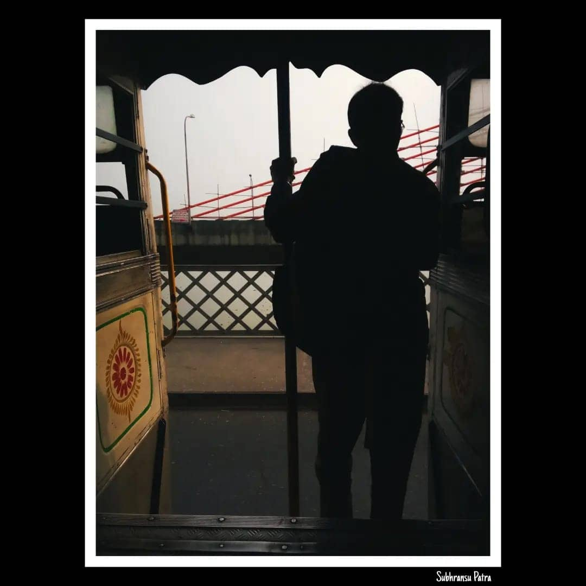

Preface
Belur Math, located on the western banks of the Hoogly river, is Ramakrishna Mission's headquarters. Established in 1938, themathplayed a remarkable role in spreading the spirituality of Ramakrishna. One of Ramakrishna's disciples and a vital personality in the 1900s, Vivekananda laid the foundation of thismath. Even after a century, the people of Kolkata are devotees of Ramakrishna and visit the holy Belur Math often. But don’t think that only Bengalis visit the place, Belur Math is also popular among other Indians and foreigners. I was a bit reluctant to go to Belur Math, but after the visit, I think not visiting the place isn't a good thought bro.
To the destination
It was a dry winter day, although the sun was shining bright. As always, we were late from the scheduled time for departure. There was also a major problem regarding the local autos since on that day the autos were not running due to some personal issues. We were lucky to have the rickshaw on time or else the wait would have altogether added up to an hour or so. After 10 - 15 minutes, we reached the bus stop, thinking how our luck was charming throughout the day and boom! We got the bus as soon as we get out of the rickshaw. Not to mention, the bus was empty too resulting in a pale - comfortable journey. My second motto for going to any place is photography, a hobby that can’t be replaced you know. But still, I can’t find anything to be clicked.Nearing the Dunlop bus stand, I saw some people weirdly begging for money. I have seen those types of beggars but the way they were asking was a bit embarrassing and much weirder. On the Vivekananda Setu (the bridge beside the Dakshineshwar Temple), one man was standing on the edge of the entrance of the bus. He was looking so beautiful standing there with the background of the hoogly river, I can’t resist clicking his picture. Well well, it was not framed in the picture as expected but leave it.  By the time it was almost 3:30 PM, the bus reached Bally halt, our destination. From there, it felt like we are nearing Belur Math.
The experience and surroundings
Why am I saying this before some kilometres from Belur math is because of the surrounding there. The rickshaw walas were standing in a queue on the road that was barely 2 minutes from where we stepped out of the bus. After taking a rickshaw which took only ₹15 to get there, we reached the gate of the Belur Math before the scheduled time. We had not noticed that the opening of Belur Math in winter was at 4 AM. Looking here and there, spending time watching the greenish trees that surrounded the Math and the local shop that was selling many things such as books, scriptures, toys etc. Five minutes later, the gates opened and the rush crowd stormed all around the silent place. The first thing that had fallen in my eye was the different types of trees. The fun fact was that trees’ name and their scientific name was also mentioned.  There was a museum beside the entry road, which I was in favour to go since my craze for visiting museums is extremely high. But respecting others’ opinions, I ‘crushed’ the dream of visiting the museum and you can say I was not that much sad since it was not in my plan. I had other plans dude.
There was a museum beside the entry road, which I was in favour to go since my craze for visiting museums is extremely high. But respecting others’ opinions, I ‘crushed’ the dream of visiting the museum and you can say I was not that much sad since it was not in my plan. I had other plans dude.
The main building: Belur Math
We walked across different types of trees and plant species and saw many artistic things. I must say the management was admirable. Photography in the main building was strictly prohibited. Still, I was not sad because it was better to see and feel the enormity of the math rather than clicking pictures.  The agitating crowd inside the building was a headache for the security guards. I was lucky to have a look at Ramakrishna Paramhans and Sarada Devi for 5 seconds. We got out of the main building and walked to the old building where Vivekananda lived.
The agitating crowd inside the building was a headache for the security guards. I was lucky to have a look at Ramakrishna Paramhans and Sarada Devi for 5 seconds. We got out of the main building and walked to the old building where Vivekananda lived.
Banks of Hoogly
As I said earlier that visiting museums was not in my plans but I had other plans. You might have fairly guessed the plan I think so. The banks of Hoogly had a mesmerising view of Kolkata which was on the other side of the bank. After visiting the Math, many people spent their time sitting in the ghats of the river. Some young people were just roaming here and there. Young couples can also be spotted sitting and holding their hands. Solo - travellers were sitting in the corner sensing the enormity of the tributary of the Ganges. Family groups were enjoying themselves in their own space; some parents were playing with their children and some set them free to get personal time for themselves. And some mobile - photographers like me were lost in the beautiful sunset. I could not capture the sunset though since we returned before its occurrence. But whoever you are, sitting in the ghats watching the waves pleases the person’s mood. Life is not always about our daily chores, it has a wider view from our different types of perspectives.